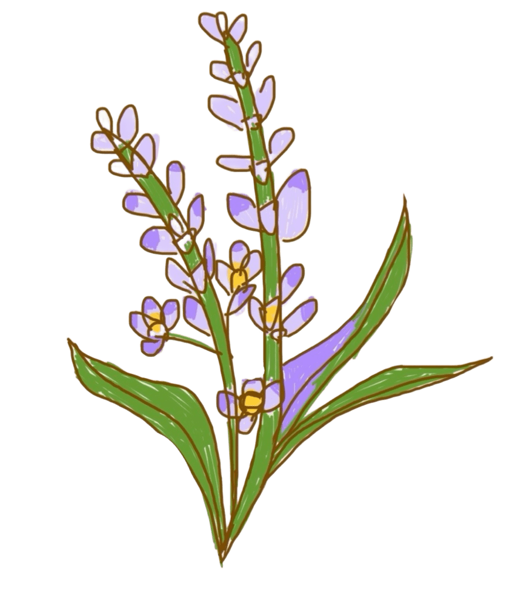
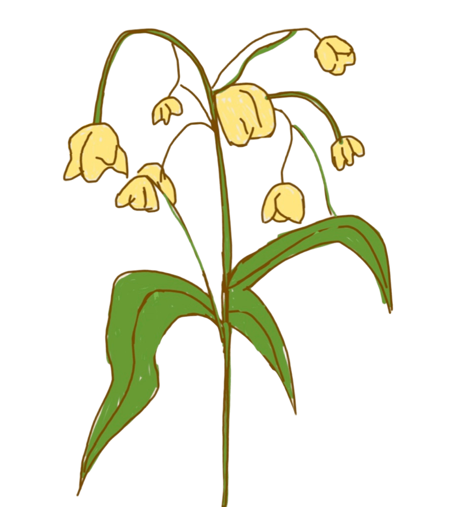

關於我們
每一份真心，都值得被溫柔地傳遞
底部的花瓶，是由心臟與鳥所融合而成。
心臟象徵人的真心與情感，是每一份祝福的起點；
鳥，來自古代「傳遞訊息」的意象，代表將內心的情感與思念送達他人。
盛放在其上的花朵，以星星的形式呈現，象徵願望、希望與指引，
願收到花的人能接受到溫暖 ☆

賴又德
Layout / Animation Design

洪憲緯
JavaScript / Interactive Logic

卓恩多
Picture layout / Content Structuring

陳柏妤
Frontend UI / CSS Design